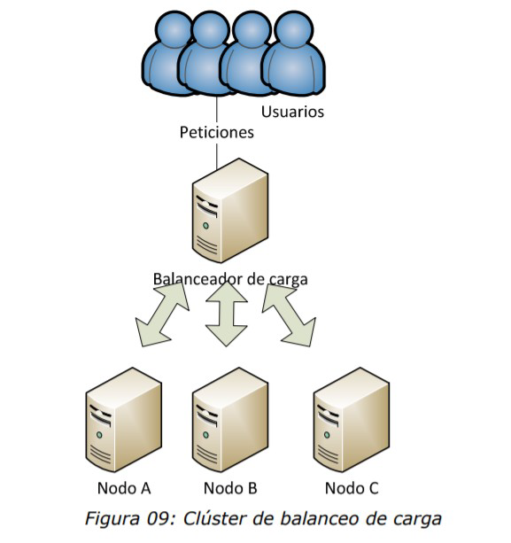

EXAMEN DE IAW IES GRAN CAPITÁN
CURSO 2 ASIR.
FECHA 10/11/2020
UNIDAD 1.
Nombre del alumno: Rafael Jiménez Cobos
EL examen consistirá en implementar la arquitectura que se indica en la imagen. Esta arquitectura debe cumplir que sea de alta disponibilidad, que sea escalable y redundante. Se deberán crear cuatro máquinas virtuales EC2 de Amazon Web Services (AWS), con la última versión de Ubuntu Server.
